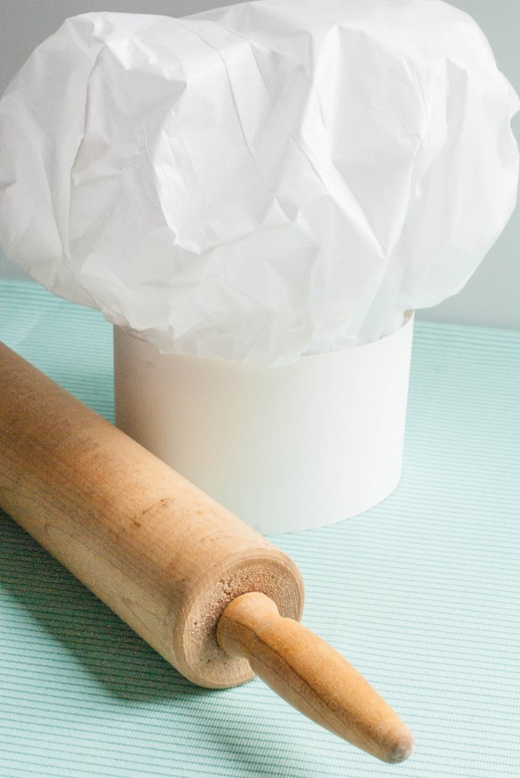
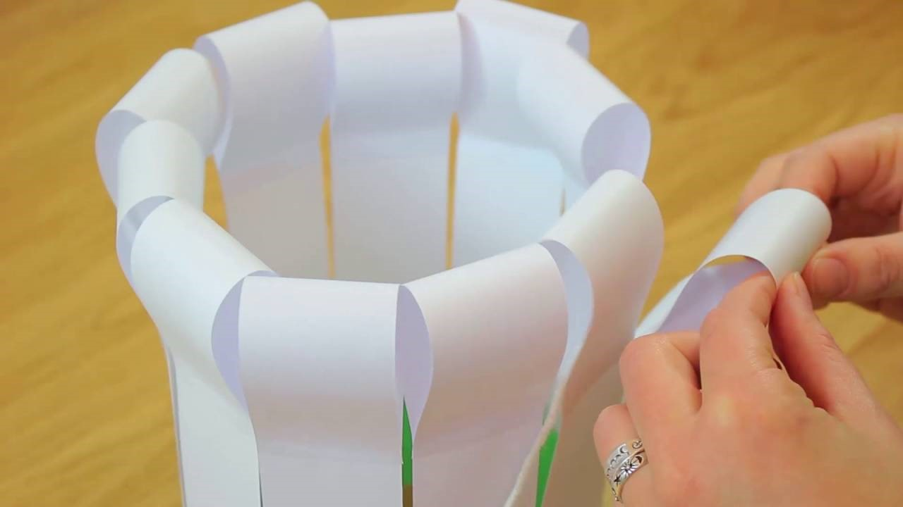
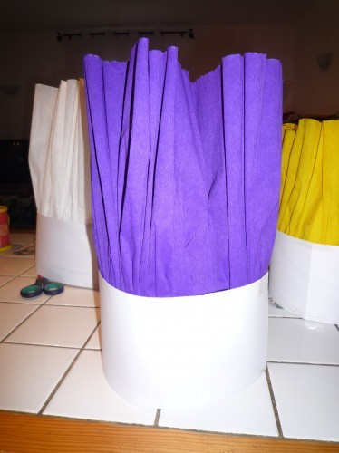

<div class="container">
    <div id="page1">
      <div  >
        <h1>Création d’une toque</h1>
        <p>Déroulement :</p>
        <p>
          Avec le matériel à ta disposition, ton nouveau défi est de te créer une véritable toque de chef cuisto!</br>
          Toute imagination est  la bienvenue avec tout matériel autorisé (tissu, papier, colle, couleurs, coton, élastiques, etc..).</br>
          Sois créatif !</br>
          Tu peux t’aider en t’inspirant de photos ou même de tutos que tu peux trouver sur internet !</br>
          Voici quelques idées :</br>
        </p>
        <br />
        <br />
        <br />
        <p>
          Pour finir : 
        </p>
      </div>
</div>